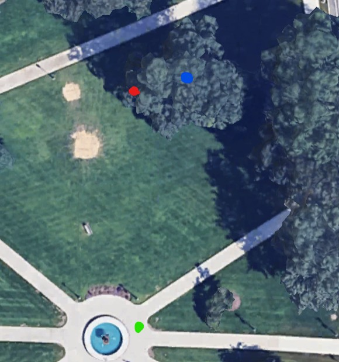

Stats
Par: 3
Distance: 141 ft
Hole Description
Starting right next to the Waterman Green fountain, the hole is to hit the bench under the tree, note there is a mandatory right of the trunk of the tree as shown in the blue dot on the map below.
Map key: green dot starting box, red dot target, blue dot mandatory.